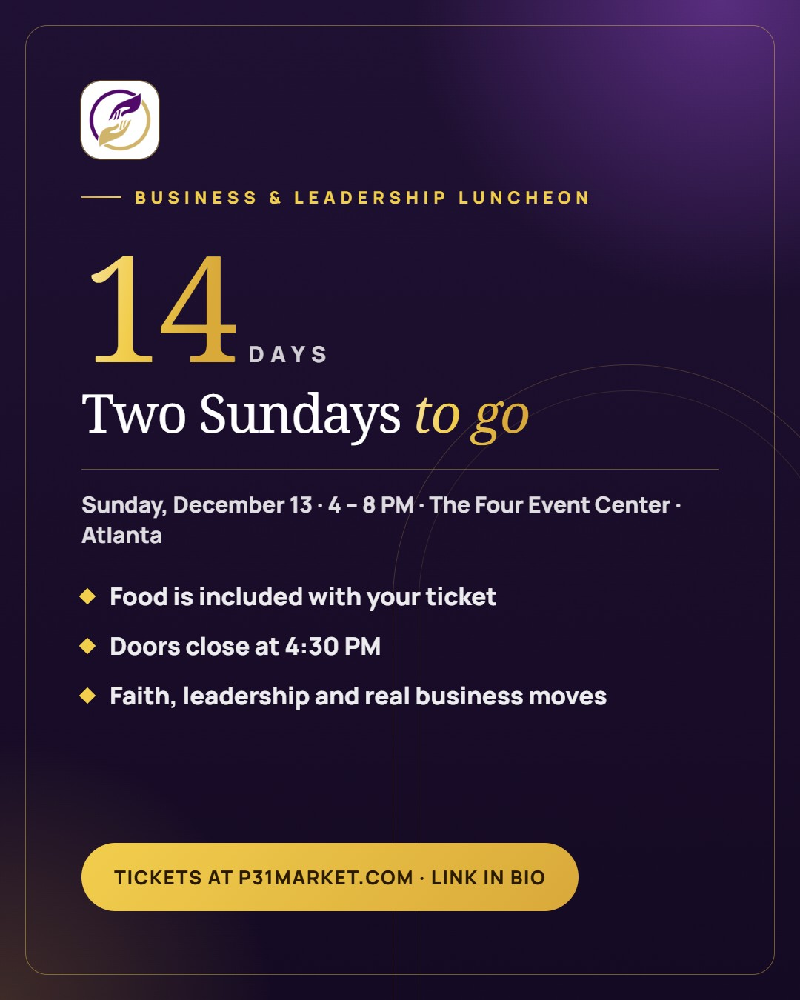
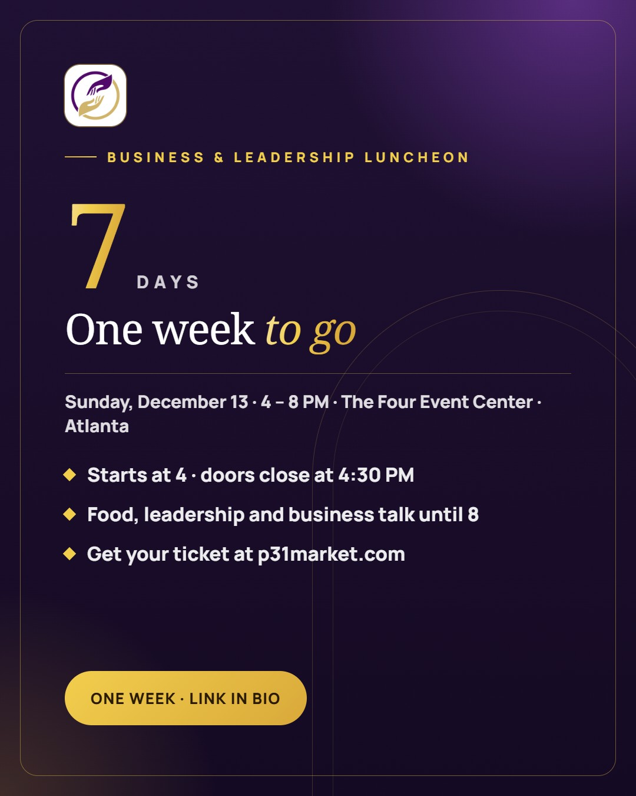
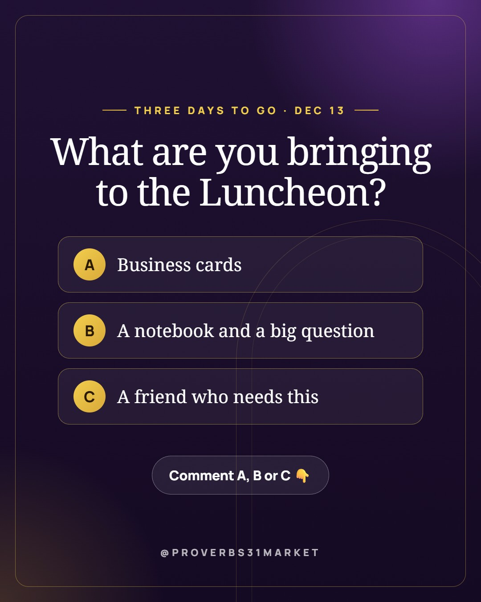
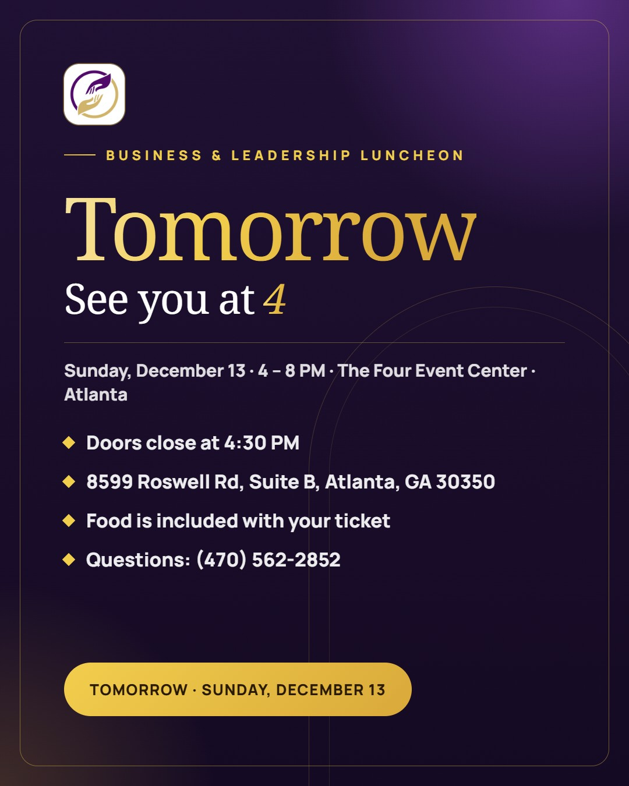
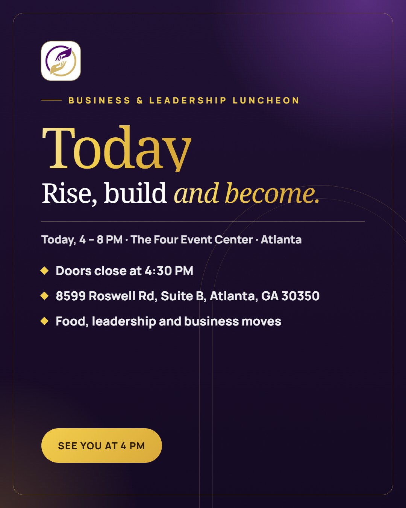

Two weeks from tomorrow. What are you wearing to the Luncheon? 👗🧥 A) Blazer, heels, power pose B) Statement dress, soft glam Comment A or B 👇 (Yes, we'll be looking for you on Sunday, December 13.) Tickets at p31market.com (link in bio). #P31Marketplace #BusinessLuncheon #WomenInLeadership #FaithAndBusiness #AtlantaEvents #WomenEntrepreneurs #Proverbs31Woman

Two weeks from today. 🗓️✨ The Proverbs 31 Business & Leadership Luncheon is Sunday, December 13, 4 – 8 PM, at The Four Event Center · Atlanta: food, networking, and an evening of faith, leadership and real business moves with women who are building the same way you are. If you have been meaning to grab your seat, this is the week. Tickets at p31market.com (link in bio). What is the one thing you are hoping to walk away with? Tell us below 👇 #P31Marketplace #BusinessLuncheon #WomenInLeadership #FaithAndBusiness #AtlantaEvents #WomenEntrepreneurs #Proverbs31Woman

One week to go. 🙌🏾 Next Sunday, December 13, we gather at The Four Event Center · Atlanta for the Business & Leadership Luncheon. We start at 4 PM, doors close at 4:30, and we rise and build together until 8. Tickets at p31market.com (link in bio). What is the one question you are bringing for a room full of women leaders? 👇 #P31Marketplace #BusinessLuncheon #WomenInLeadership #FaithAndBusiness #AtlantaEvents #WomenEntrepreneurs #Proverbs31Woman

Three days to go. What are you bringing to the Business & Leadership Luncheon? 👜 A) Business cards B) A notebook and a big question C) A friend who needs this Comment your letter 👇 (D, all of the above, is allowed.) Sunday, December 13, 4 PM, The Four Event Center · Atlanta. Tickets at p31market.com (link in bio). #P31Marketplace #BusinessLuncheon #WomenInLeadership #FaithAndBusiness #AtlantaEvents #WomenEntrepreneurs #Proverbs31Woman

Tomorrow. ✨ Everything you need for the Business & Leadership Luncheon: 📍 The Four Event Center · Atlanta, 8599 Roswell Rd, Suite B, Atlanta, GA 30350 🕓 4 – 8 PM. Please arrive by 4:30; doors close then. 🍽️ Food is included with your ticket 📞 Questions: (470) 562-2852 Bring your business cards and come ready to be poured into, in faith and in business. Who is coming? Say hi below so we can look for you 👇 #P31Marketplace #BusinessLuncheon #WomenInLeadership #FaithAndBusiness #AtlantaEvents #WomenEntrepreneurs #Proverbs31Woman

Today is the day. 🙏🏾✨ The Proverbs 31 Business & Leadership Luncheon, 4 PM at The Four Event Center · Atlanta. Doors close at 4:30, so give yourself a little grace in traffic. Come as you are, ready to rise and build with a room full of women walking in purpose. If you are coming, comment "I'm in" so we can look for you 👇 See you this afternoon. #P31Marketplace #BusinessLuncheon #WomenInLeadership #FaithAndBusiness #AtlantaEvents #WomenEntrepreneurs #Proverbs31Woman